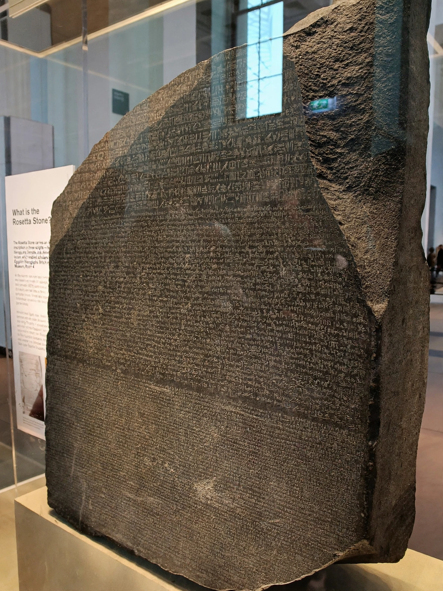

Rosetta Stone

The Rosetta Stone is a granodiorite stele issued in Memphis, Egypt, in 196 BC, bearing a priestly decree in support of King Ptolemy V Epiphanes written in three scripts: Ancient Egyptian hieroglyphs, Demotic script, and Ancient Greek. Because the Greek could be read, the stone became the key to deciphering Egyptian hieroglyphs after more than a thousand years in which their meaning had been lost.
French soldiers in Napoleon's army rediscovered the stone in July 1799 while rebuilding a fort near the town of Rosetta (Rashid). After the French defeat, the stone passed to Britain under the Treaty of Alexandria (1801) and has been in the British Museum since 1802 — where its return is periodically requested by Egypt.
Decipherment
Thomas Young established that Demotic and hieroglyphic signs had phonetic values and identified royal names in cartouches. Jean-François Champollion completed the breakthrough, announcing his decipherment in 1822 by comparing the cartouches with his knowledge of Coptic.
The object
The surviving stone is incomplete — the upper part, which held the hieroglyphic text, is broken away. It measures 112.3 cm high at its tallest and weighs about 760 kg.